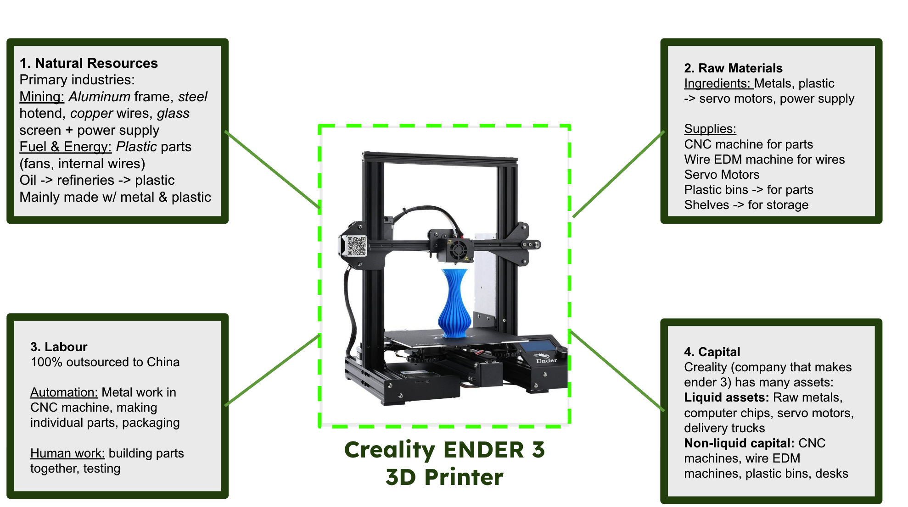
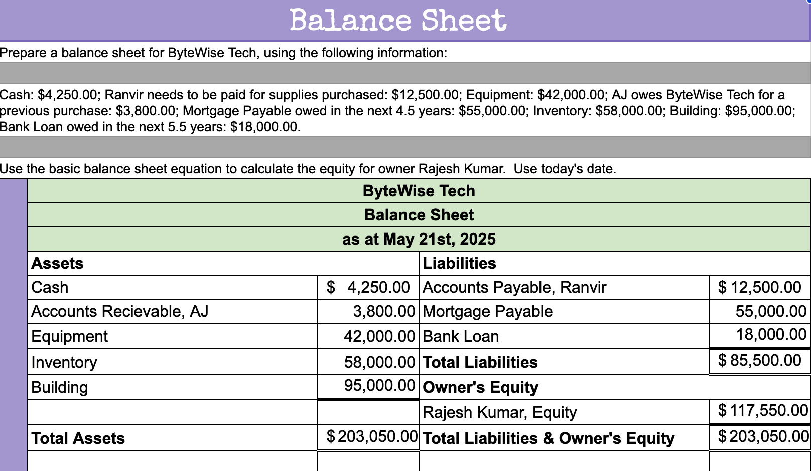

Classroom Tasks:
These are the top 5 tasks we did in class (no particular order) that I believe I learned the most from about business and running a company:
#1: Entrepreneurial Venture, Teachify

I think that the Entrepreneurial venture was one of the projects that overall I was able to bring together everything that I learned in the course and apply into a single idea to see how all these consepts would actually work in a real business. I was able to incorperate what we learned about demographics, psychographics, geographics and buyer behavour, the 4 P's (product, price, place, promotion) along with the 3 C's (consumer, competition, company) and utilize all those components to be able to bring together what I believe was a solid presentation on a viable business idea.
Skills:
- Marketing: Analysing customers (demo, psycho, geo, buy), the 4 P's, etc.
- Accounting: Calculating BEQ, BEP and using it in a practical setting.
- Mission & Vision: Crafting a real vision and mission statement that will motivate a team to work on the product
- Persuation Having to live pitch the product to an audience and convince them
Improvements:
I think this project was overall well structured and I dont have much feedback, however to improve this project even more I would try to put more focus on helping students get their prototypes up so that int he pitch more groups can show their ideas in a real form.
#2: Unit D Summative, Canada's Wonderland
The Unit D assessment in which Zyan and I chose the business of Canada's wonderland to analyse and throughly was quite an education project in the course. Analysing an already existing business, especially just before we began the entrepreneurial ventures was definitly a good idea as we looked into the factors of production, CSR and marketing that wonderland was using in their business. Analysing the business, I learned about how real business use the material we learned in class and the frameworks such as the 4 Ps and 3 Cs and how such frameworks should be applied in my our possible ventures in the future.
Skills:
- Manufacturing/Factors of Production: Analysing the factors of production along with the fundemental 6 industries all products originate from
- Corperate Social Responsibility: The real-world implementation of CSR in business.
- Productivity: How business improve productivity in their production, management, and operations
- Marketing: Analysing 4Ps, 3 Cs, forms of media and new marketing techniques used
Improvements:
This project was also quite well structures and successful in conveying the material well, to improve I would recommend going over more examples in class so that students can gain more perspective of how to analyse business effectivly.
#3: Factors of Production, Ender III 3D printer 
In the factors of production we were able to gain perspective on the real world implementation of how products are made and how the material we learn in class about the different factors: Natural Resources, Raw Materials, Labour, Capital, Information, and management. We learned many key details that we were able to apply from the lesson such as the difference between ingredients and supplies, along with the six fundemental industries: agriculture, fishing, mining, water, fuel, logging.
Skills:
- Manufacturing/Factors of Production: Going over again the factors of production and the real world implementation on a real prodcut
- Ingredient vs Supply: Ingredients are materials used in the product whiles supplies are used in the Manufacturing process
- Six Fundemental Industries How all products originate from six fundemental industries
Improvements:
This task taught a lot about manufactturing and production, to improve I would recommend asking students to create a flow chart on how raw materials and the fundemental resources end up making it to the final product, and try to find ways in which they could make it more efficient.
#4: Accounting Consolidation 
I've chosen the accounting Consolidation project to represent all the other tasks that we did regarding accounting and income and balance sheets. These tasks were very informative and I really enjoyed looking into how real businesses format their accounting, and exploring what accounting really was. Previously I had a very vague idea of what accountants do, but these tasks really cleared my view and taught me fundementals of what goes on income vs balance sheets, the formating, assets vs liabilities and how they play their role in owners equity, and the specific formating with underlines and dollar signs along with the purposeful organization that goes into them.
Skills:
- Income Sheets: Income vs Expenses and calculating gross profits
- Balance Sheets Assets vs Liabilities, determining net worth & equity
- C.O.G.SDifference between retail and service in income sheets: cost of goods sold
Improvements:
I think that this task was very well organized, to make the learning easier I would definitly have perhaps a mock exam where the teacher doesn't give easy help to help us prepare for the final task!